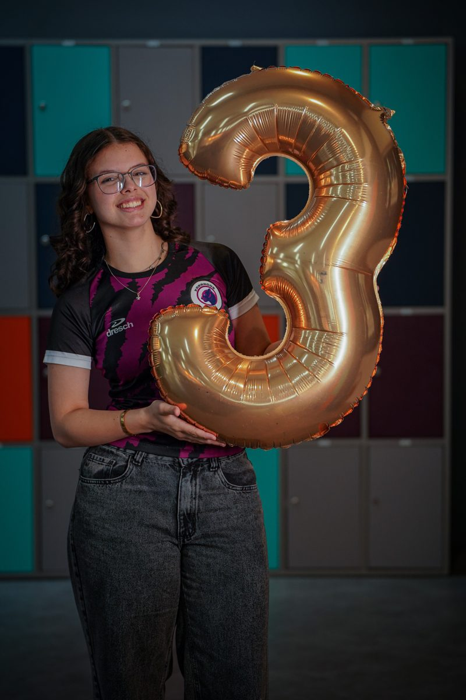
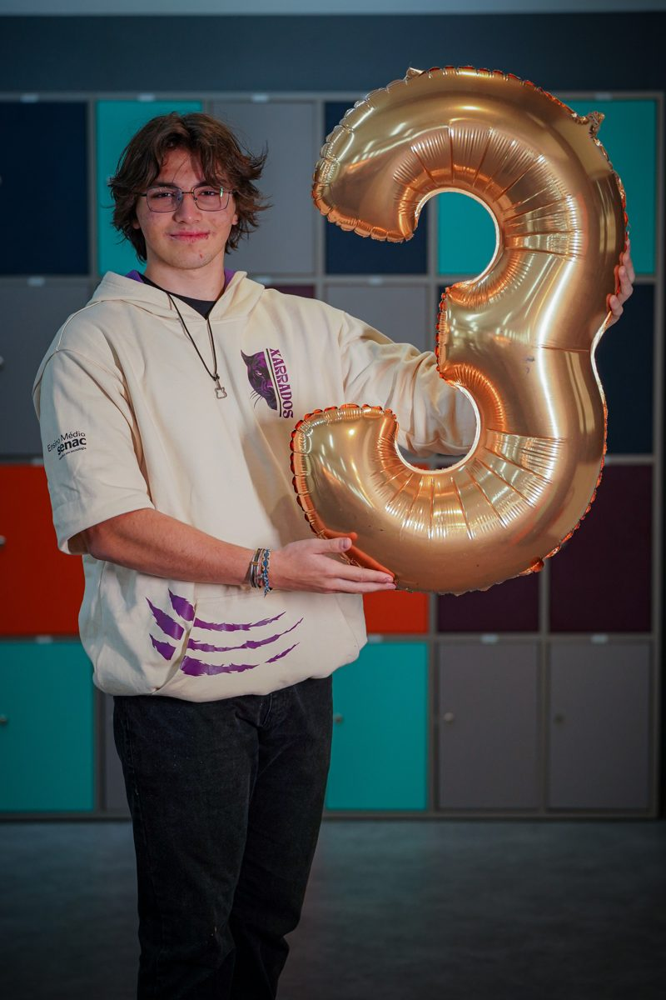
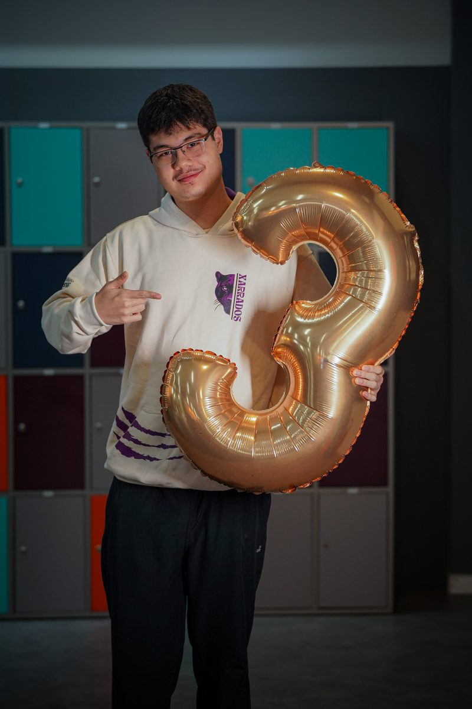
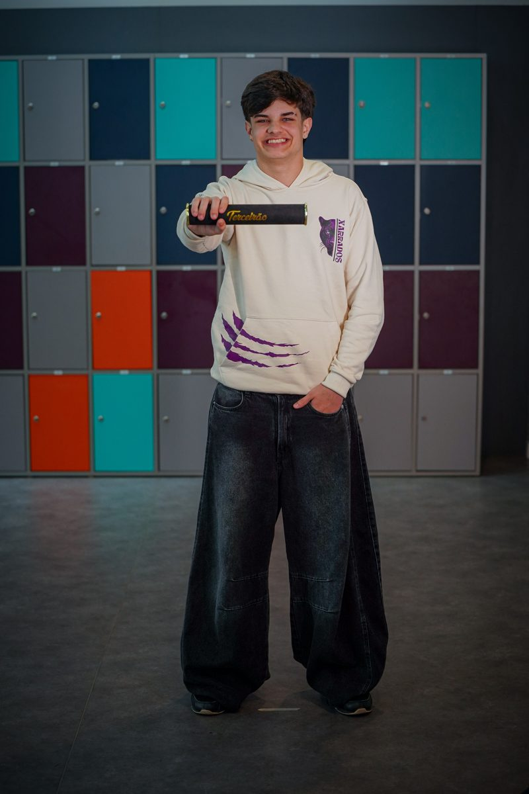

Ruptura
Questionou ideias rígidas sobre o que a cultura brasileira deveria ser.
01 · O movimento
Uma explosão cultural que transformou contradições em linguagem — e o Brasil em matéria de invenção.
O Tropicalismo ganhou força no fim dos anos 1960. Mais que um estilo musical, foi uma atitude cultural: misturar referências populares e eruditas, nacionais e estrangeiras, antigas e modernas.
Questionou ideias rígidas sobre o que a cultura brasileira deveria ser.
Samba, rock, baião, guitarras, orquestrações, poesia e ruídos conviviam na mesma obra.
Teatro, cinema, artes visuais, moda e televisão também atravessaram sua estética.
Contexto histórico
O movimento aconteceu durante a ditadura militar. Festivais, canções e performances tornaram-se espaços de debate, enquanto censura e repressão limitavam a liberdade artística.
A influência estrangeira não era tratada como simples cópia. O gesto tropicalista era absorver referências, combiná-las com elementos brasileiros e produzir algo novo, crítico e inesperado.
Linha do tempo
Um Brasil em rápida transformação cultural, política e urbana prepara o terreno para novas linguagens.
02 · Vozes e invenções
Um movimento construído por encontros entre vozes, letras, arranjos e atitudes.
03 · A exposição continua
Quatro caminhos para observar uma época por meio da arquitetura, da música, da moda e do design.
04 · Música
A música foi o ponto de encontro mais visível do Tropicalismo. Canções, arranjos, performances e programas de televisão transformaram o palco em espaço de experiência.
Projeto do grupo
O grupo irá produzir um clipe da canção. Esta área receberá o vídeo final e os créditos quando a produção estiver concluída.
● EM PRODUÇÃOPesquisa aberta
Aspectos que ajudam a ler o período para além de uma única obra.
Misturas sonoras, guitarra elétrica, ritmos brasileiros e arranjos experimentais.
Cores fortes, estampas, atitude cênica e roupas como linguagem de transformação.
Juventude, contracultura e contestação de hábitos e convenções.
Festivais televisionados ampliaram debates e levaram performances a públicos diversos.
Diálogo com Pop Art, concretismo, cinema, teatro, poesia e cultura popular.
Convivência entre referências locais e estrangeiras, sem buscar uma ideia única de Brasil.
Ditadura militar, censura e disputas sobre identidade cultural atravessaram o período.
05 · Arquitetura em miniatura
O grupo está desenvolvendo uma maquete iluminada do STF, com informações sobre localização, imagem original, inauguração, autoria e o edifício.
06 · Moda
Três looks irão traduzir referências das décadas de 1960 e 1970 por meio de cores, formas, estampas e acessórios. Pelo menos uma criação será feminina.
07 · Cartaz A3
O cartaz poderá reunir Pop Art, referências da Tropicália, psicodelia, colagem, cores fortes, flores e padrões. O resultado final será inserido aqui.
08 · O grupo
Seis estudantes, diferentes frentes e um projeto em construção.

Função no projeto — em breve

Função no projeto — em breve

Função no projeto — em breve

Função no projeto — em breve
Função no projeto — em breve
Função no projeto — em breve